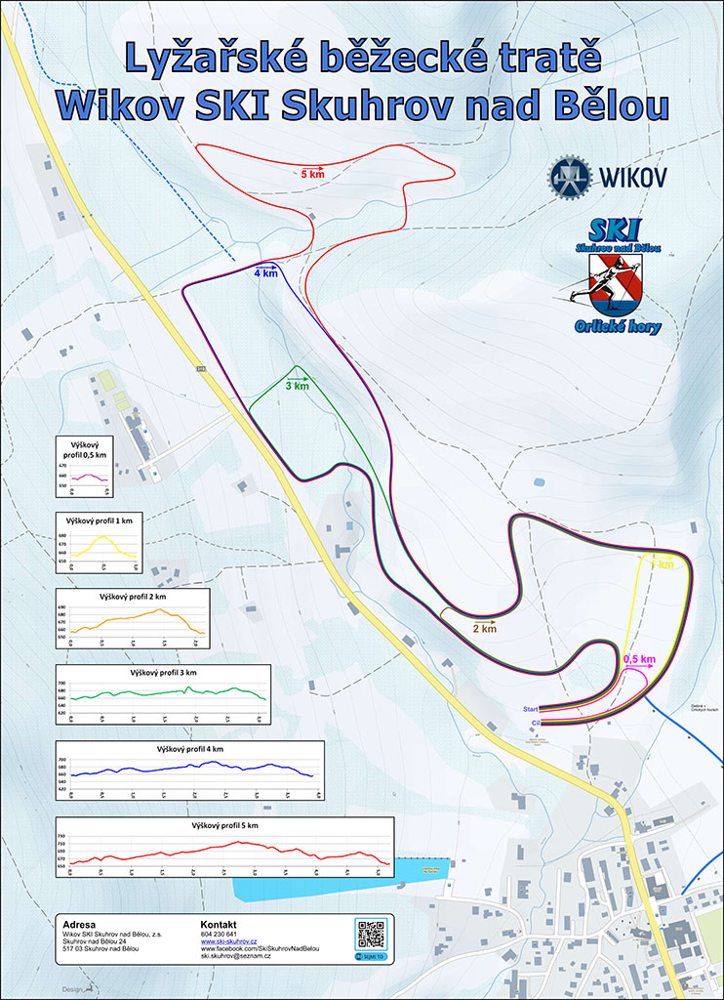

Tratě
Lyžařské běžecké tratě Wikow SKI Skuhrov
 Zobrazit tratě >Úprava tratí
Wikov SKI Skuhrov nad Bělou udržuje v areálu v Deštném v Orlických horách závodní běžecké tratě v délce 1, 2, 3, 4 a 5km, které jsou homologovány Svazem lyžařů ČR pro pořádání Mistrovských závodů a 2 trasy "Buď fit" v délce 3 a 4km. Tratě jsou situovány do údolí Ošerovského potoka a přilehlých strání. Jsou vedeny po zpevněných cestách a loukách v dostatečné šířce pro klasický i volný styl. Tratě jsou v terénu vyznačeny barevnými plastovými nebo kovovými směrovkami. Tratě jsou přístupné veřejnosti a je možno je libovolně kombinovat podle fyzické zdatnosti a lyžařské dovednosti.
Aktuální stav přilehlých turistických tras můžete zkontrolovat na bilestopy.cz
V sezóně 2021/22 údržbu tratí spolufinancovala NADACE ČEZ částkou 70.000 Kč, prostřednictvím programu EPP Pomáhej pohybem
Děkujeme za podporu!